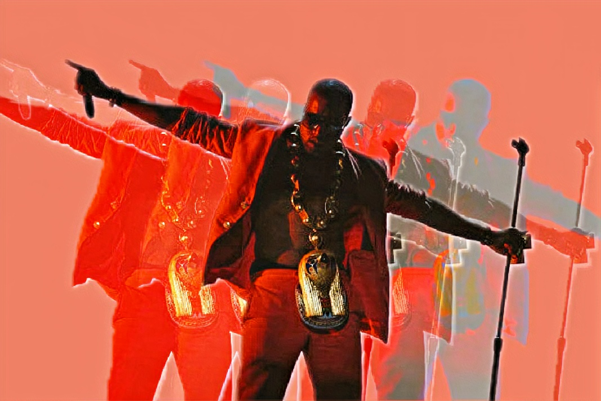

"My Beautiful Dark Twisted Fantasy" is the 5th studio album by Kanye West, one of the most famous rapper and producer. This album was released on November 22, 2010 after his self0imposed exile in Hawaii in 2009. The characteristic that penetrates the album, the difference from previous works is grandeur. Kanye West added layered chorus, strings, and wind instruments for the rich sounds. I chose "My beautiful Dark Twisted Fantasy" as my favorite album because this album changed my taste in music to foreign music. After I listened to this album I started to search for more hip-pop music from United States. As I mentioned above this album's rich sound caught my ears and change my favorite music genre.
